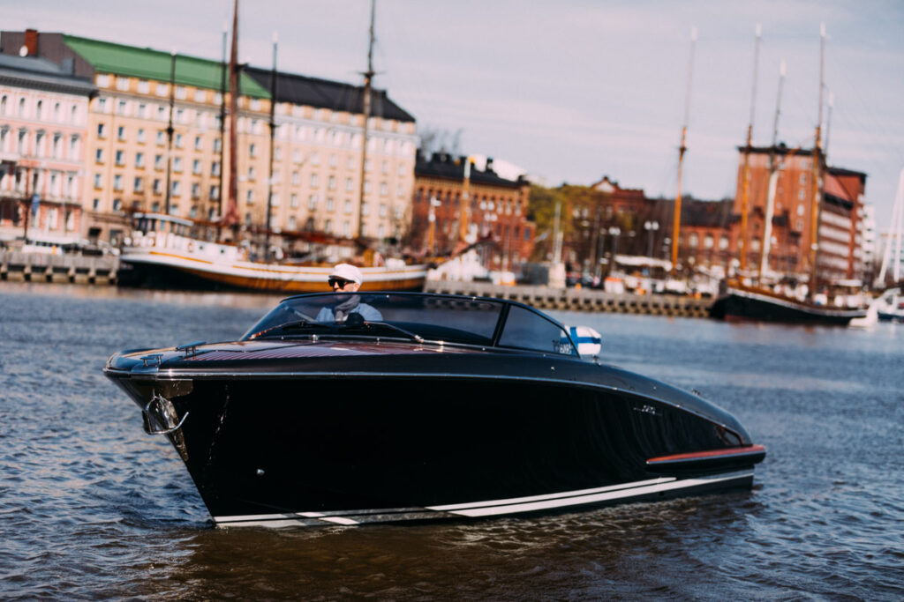
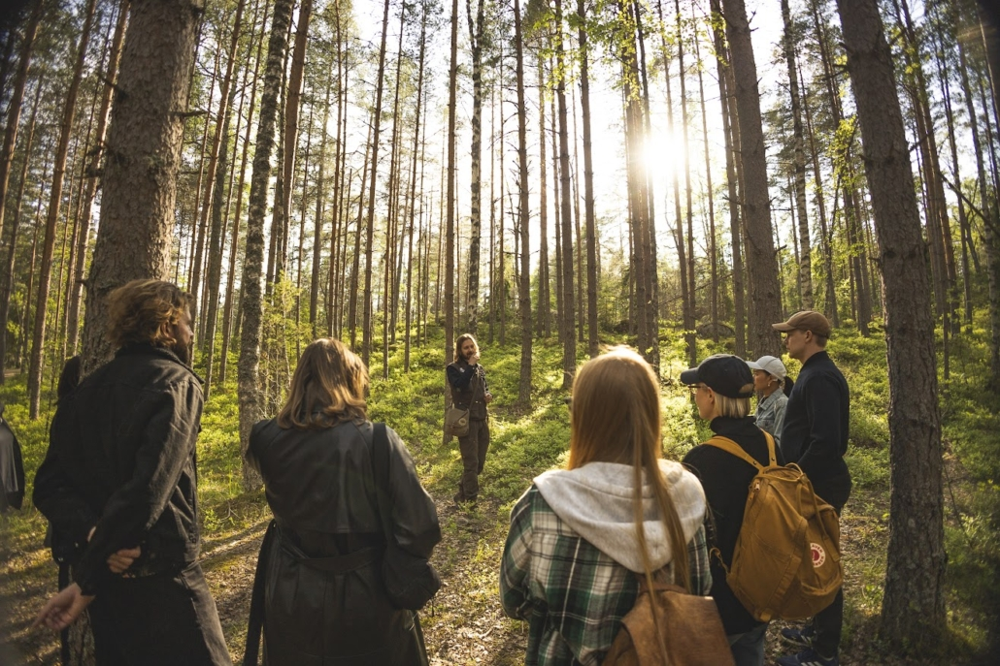

Toiminta
Taipaleen leirintäkeskuksessa on monenlaista toimintaa ympäri vuoden.
- Aurinkosilta – perjantai 12.6.2026 klo 20.00
- Kalliorannan Kaiku – lauantai 13.6.2026 klo 21.00
- Revontuliyö – perjantai 19.6.2026 klo 22.00
- Särö & Sammal – lauantai 20.6.2026 klo 20.30
- Hiljainen Hiekka – perjantai 26.6.2026 klo 21.00
- Vanhat Varjot – lauantai 27.6.2026 klo 22.00
- Keskiyön Kaarna – perjantai 3.7.2026 klo 20.30
- Järvenselkä – lauantai 4.7.2026 klo 21.30
- Pohjoistuuli & Valo – perjantai 10.7.2026 klo 22.00
- Liekkiheinä – lauantai 11.7.2026 klo 20.00
Liput voit ostaa vastaanotosta.
Venevuokraus
Soutuveneitä voi vuokrata päärakennukselta kesäkaudella hintaan 5 € / tunti. Vuokrauksen maksimikesto on kuusi tuntia.

Kylpyläosasto
Kylpyläosastomme on auki ympäri vuoden. Käytössä on syvä uima-allas, kaksi poreallasta sekä lastenallas liukumäkineen.
Saunaosastolla on tavallinen sauna ja höyrysauna.
Hinnat:
Aikuinen 12 €
Opiskelija / eläkeläinen 10 €
Kouluikäinen lapsi 6 €
Alle kouluikäiset ilmaiseksi

Opastetut luontoretket
Kesäaikaan joka lauantai järjestetään opastettu luontoretki, lähtö kello 13 päärakennukselta.
Retki ei ole esteetön eikä vaadi kovaa kuntoa. Kesto noin kolme tuntia. Hintaan sisältyy pienet eväät.
Hinnat:
Aikuinen 15 €
Opiskelija / eläkeläinen 12 €
Kouluikäinen lapsi 8 €
Alle kouluikäiset ilmaiseksi

Voitte myös ehdottaa toimintaa ottamalla meihin yhteyttä, niin katsomme, voimmeko järjestää sen.